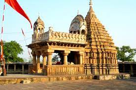

open:6:30am to 8.30pm
The dhuandhar fall is a waterfall in Jabalpur district in the Indian state of Madhya Pradesh.
It is in bhedaghat, India as viewed from east side.
The word dhuandhar is derived from two words - Dhuan(smoke) + dhar(flow) meaning a waterfall where we get smoke- flow like feeling.
It is located on narmada River in bhedaghat and are 30 meter high.
Distance from station to bhedaghat is 22km.
Metro avilable for going bhedaghat. Whanever you go bhedaghat so many idols you will see goddess Narmada.
Entry gate to dhuandhar distance is 1km you go by foot.
You will also see so many things are made in marble rocks and lot of shop for shopping.
It is very beautifull you never forget.
Its waterfall looks like milk and so many people come here to see.
After Dhuandhar 1km far chushatyogini mandir you can go by auto it take 20-25 rupees.
This temple was made in the 10th century.
There are about 100 ladders.
There is a statue of lord shiva and parvati sitting on the nandi.
which is seen in very few temple.